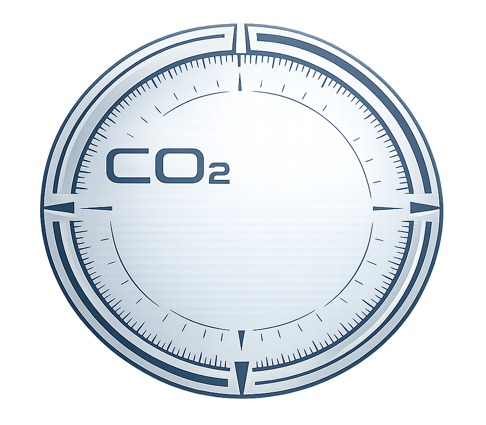
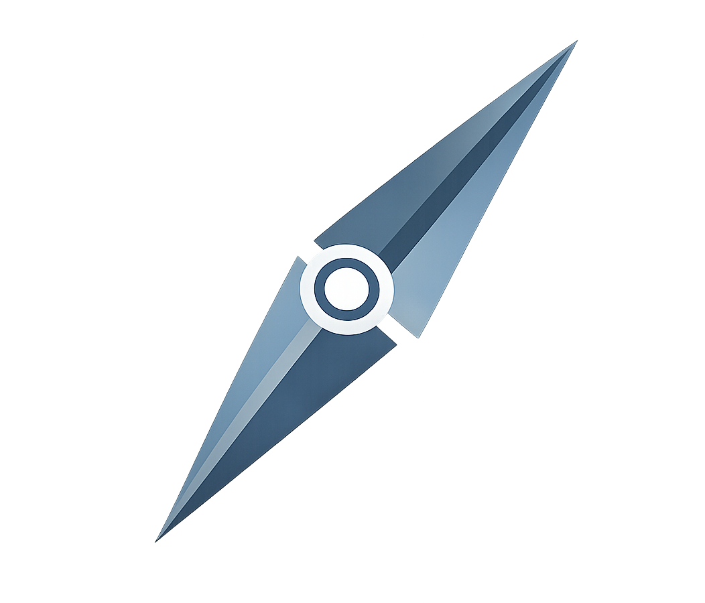
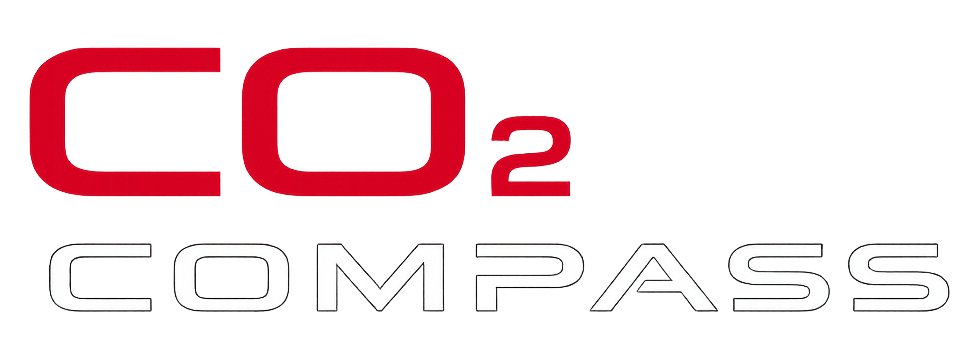

Nachhaltiges Bauen · CO₂ Compass

Understand
·
Navigate
·
Reduce
Select a Product Category
Raised & Hollow Floor Panels
Floor LCA Tool
Metal Ceilings
Ceiling LCA Tool
Partition Wall Systems
Partition Wall LCA Tool
Floor Pedestals
Pedestal System Tool
Competitor Result Viewer
Competitor Result LCA Tool
Back to Workspace